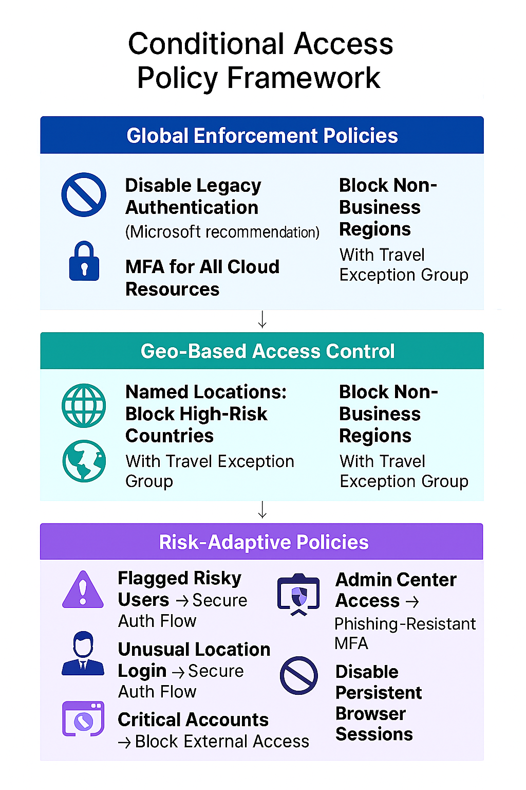

Challenge
To protect cloud resources and sensitive identities, our organization needed a robust Conditional Access framework that could adapt to risk signals, geographic threats, and application sensitivity. The solution had to balance security with flexibility for executive travel and critical operations.
Tools & Technologies
- Microsoft Entra Conditional Access
- Named Locations & IP Ranges
- Risk-Based Policies (Identity Protection)
- Phishing-Resistant MFA (FIDO2, Certificate-based)
- Travel Exception Groups
- Session Controls & Token Lifetime Policies
Policy Highlights
- Disabled legacy authentication (Microsoft recommendation)
- Enforced MFA for access to all cloud resources
- Blocked access from countries with known threat actors using named locations
- Blocked access from non-business countries with travel exception group
- Triggered secure authentication flow for users flagged as risky
- Triggered secure authentication flow for logins from unfamiliar locations
- Applied custom authentication flow for HR application access
- Blocked external authentication for critical accounts (e.g., break-glass)
- Required phishing-resistant MFA for all admin center access
- Disabled persistent browser sessions and enforced reauthentication every 19 days
Architecture Diagram
Impact
- Mitigated identity-based attacks and geographic threats
- Improved MFA posture with phishing-resistant methods
- Enabled secure access for executives and critical roles
- Reduced risk exposure from legacy protocols and token persistence